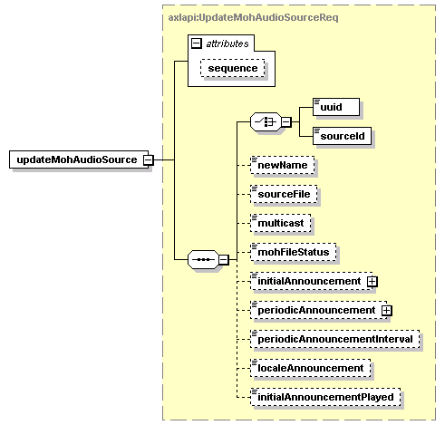

| diagram |  | ||||||||||||
| namespace | http://www.cisco.com/AXL/API/10.5 | ||||||||||||
| type | axlapi:UpdateMohAudioSourceReq | ||||||||||||
| properties |
|
||||||||||||
| children | uuid sourceId newName sourceFile multicast mohFileStatus initialAnnouncement periodicAnnouncement periodicAnnouncementInterval localeAnnouncement initialAnnouncementPlayed | ||||||||||||
| attributes |
|
||||||||||||
| source | <xsd:element name="updateMohAudioSource" type="axlapi:UpdateMohAudioSourceReq"/> |